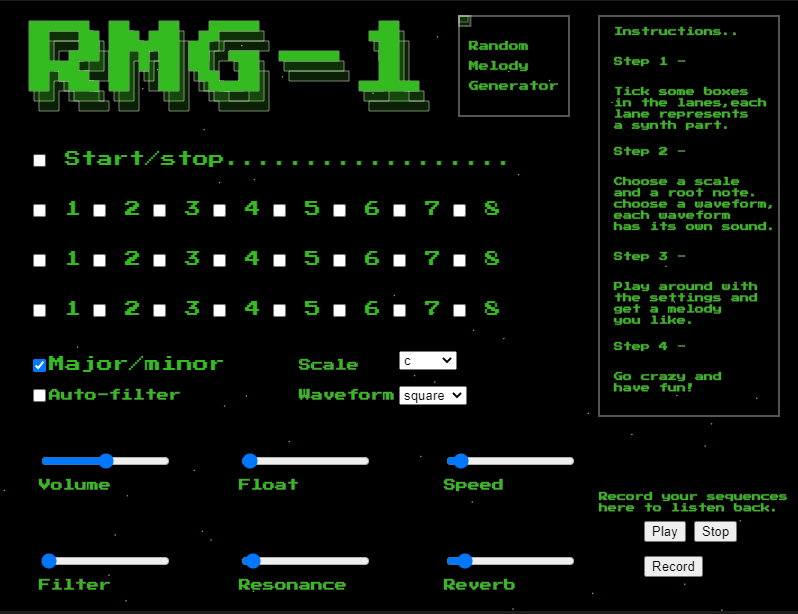

Welcome to my blog, here i will be showcasingn some experiments in audio visual programming.
Rmg-1 Synthesizer/sequencer built with p5.js
During my degree at Leeds Trinity University i studied web develpoment and creative coding. One of the projects I worked on during this time was a sequencer/synthesizer built using p5.js that could run in the browser. The synthesizer used three lanes each with a different octave and then generated random notes played within a set scale. The design involved writing a function to transpose the notes into different scales using the formula fn = f0 * (a)n. The results are definatley interesting and helped me to gain a good grasp of how the p5.js library works, along with learning HTML/CSS and javascript. Check it out here.